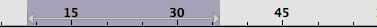
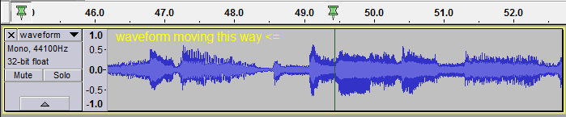

Timeline
From Audacity Development Manual
A particularly powerful use of the Timeline is in the creation of seamless loops.
Contents
- The Timeline ruler
- Symbols displayed on the Timeline ruler
- The Timeline in use
- Pinned Recording/Play head
- Using Timeline Quick-Play
- Timeline right-click menu
The Timeline ruler
By default the Timeline is displayed with the Scrub Ruler showing, the gray strip below the Timeline.
The Scrub Ruler is used solely for Scrubbing and Seeking and can be turned off by right-clicking in the Timeline and selecting from the dropdown menu.
Symbols displayed on the Timeline ruler
- The Record/Play head button at the far left of the Timeline (shown in its default unpinned state) controls the record and play heads enabling you to toggle between unpinnned and pinned.
- Clicking on this button will change to pinned (fixed and centered) record/play heads, clicking on it again will revert to unpinned.
- The selected region: (when present) is shown as a shaded region on the ruler. By default, pressing Play or Record on Transport Toolbar plays or records from the left edge of this region.
- In the shaded region, the playback region is shown by thin left-pointing and right-pointing arrowheads connected by a line. This region will be played whenever the Play button
 is clicked (see also: Play Region Lock).
is clicked (see also: Play Region Lock).
- In the shaded region, the playback region is shown by thin left-pointing and right-pointing arrowheads connected by a line. This region will be played whenever the Play button
{kind=link}
- The editing cursor: (always present when there is no selected region) is shown as a black vertical line. When "Quick-Play" is not active, the playback start position cursor is attached to it . Pressing the Record button
 starts recording from this cursor position.
starts recording from this cursor position.
{kind=link}
-
 The unpinned-head playback cursor: (when playing or paused during play) is shown as a large green triangle.
The unpinned-head playback cursor: (when playing or paused during play) is shown as a large green triangle.
-
 The pinned-head playback cursor: (when playing or paused during play) is shown as a large green drawing-pin in the center of the Timeline.
The pinned-head playback cursor: (when playing or paused during play) is shown as a large green drawing-pin in the center of the Timeline.
-
 The unpinned-head record cursor: (when recording or paused during record) is shown as a large red triangle.
The unpinned-head record cursor: (when recording or paused during record) is shown as a large red triangle.
- The pinned-head record cursor: (when recording or paused during record) is shown as a large red drawing-pin in the center of the Timeline.
 Quick-Play region: A region in the Timeline that plays immediately when dragged with the mouse, even if audio is already playing elsewhere. It is shown by thick left-pointing and right-pointing arrowheads connected by a line. By default, Quick-Play does not modify the position of the editing cursor or region in the waveform (this behavior may be changed in the Timeline context menu). To start "Quick-Play" of a region (even if the track is already playing or paused from playing), hover over the Timeline until the mouse pointer changes to a hand, then drag in either direction and release. Playback will continue to the end of the Quick-Play region.
Quick-Play region: A region in the Timeline that plays immediately when dragged with the mouse, even if audio is already playing elsewhere. It is shown by thick left-pointing and right-pointing arrowheads connected by a line. By default, Quick-Play does not modify the position of the editing cursor or region in the waveform (this behavior may be changed in the Timeline context menu). To start "Quick-Play" of a region (even if the track is already playing or paused from playing), hover over the Timeline until the mouse pointer changes to a hand, then drag in either direction and release. Playback will continue to the end of the Quick-Play region.
- If you just want to play from a particular point to the end of the project, click in the Timeline at the point from which you want playback to start or restart. The Quick-Play cursor is then shown only by a left-pointing arrowhead. Playback will continue to the end of the project.
- To make the dragged Quick-Play region loop (play repeatedly until stopped), press and hold SHIFT, drag in the Timeline then release the drag. Loop play will be indicated by the Play button in Transport Toolbar changing to Loop Play
 .
.
- You can also play two seconds before the Quick-Play region and one second after it (as if that region had been deleted) just like Play Cut Preview of a region in the waveform. To preview cutting the Quick-Play region, press and hold CTRL then drag and release in the Timeline. The duration that is played before and after the region can be changed in the Cut Preview section of Playback Preferences.
- As with standard playback, you can press SPACE or click the Stop button
 to stop Quick-Play before the end of the region or project is reached.
to stop Quick-Play before the end of the region or project is reached.
- Play Region Lock: The position of the playback region (or the current position of the Quick-Play region) can be locked in the Timeline for use in all further standard playback. To do this, choose or right-click in the Timeline and choose Lock Play Region from the context menu.
- When "Locked", the region displays in red in the Timeline. A locked region is always used for standard playback (including Play-at-Speed) even if the editing cursor or region in the waveform is at a different position.
- The position of the locked region cannot be expanded or contracted by dragging either red arrowhead. However, you can still click in the Timeline so the project Quick-Plays from there (or drag some other region in the Timeline so that region Quick-Plays), preserving the locked region.
- You can also extend or contract Quick-Play with respect to the locked region without having to drag the entire region you want to Quick-Play. To do this, drag in either direction from the left-pointing red arrowhead of the locked region then release to play from the release point to the end of the locked region. Drag in either direction from the right-pointing red arrowhead then release to play from the start of the locked region to the release point.
- To unlock the region so that all further playback respects the editing cursor or region in the waveform, choose , or right-click in the Timeline and choose Unlock Play Region from the context menu.
- Play Region Lock or Unlock may be performed even when the track is playing or paused from playing.
The Timeline in use
- Standard playback shows:

- The editing cursor (the black vertical bar)
- The playback start position cursor (the left-pointing gray triangle with short gray vertical bar to left)
- When Quick-Play is not active (see below) the editing cursor and the playback start position cursor are always at the same point on the Timeline, and together are called the standard cursor
- Recording with no selection present shows:
-
- The editing cursor and the playback start position cursor (as above)
- The recording cursor (the red triangle) - recording will continue until stopped.
- After clicking in the Timeline to initiate Quick-Play:
-
- The editing cursor position is unchanged
- The playback start position cursor moves to the point clicked
- The green playback cursor shows the current playback position.
- After clicking and dragging in the Timeline to initiate Quick-Play of a region:

- The editing cursor position is unchanged
- The green playback cursor shows the current playback position
- The "Quick-Play" region is indicated by the thick horizontal gray bar with arrowheads on each end.
- After clicking and dragging in the waveform:
- 
- Instead of the editing cursor, a shaded region shows the time range of the selected audio.
- No audio plays, but the potential playback region is indicated by the thin horizontal gray bar with arrowheads on each end.
- The potential playback region is identical to the selection region in the waveform.
- After locking a Play Region

- The thick horizontal red bar with arrowheads on each end show the region that will always be played, even if the editing cursor or region in the waveform is at a different position.
Pinned Recording/Play head
You can change Audacity to play and record with a fixed head pinned to the center of the Timeline. In this mode the head remains static and the waveforms will move as the audio is played or recorded.
This behavior is controlled by using the button at the left of the Timeline. By default this shows as a green downwards-pointing triangle (like the playhead). In this mode, the play or record head will move horizontally and the waveform will scroll when necessary, except that if Update display when Recording/Playback head is unpinned is unchecked in Tracks Preferences then scrolling will not occur.
Clicking on the green triangle will cause the button icon to change to a drawing-pin. This indicates that the play or record head is now pinned to the center of the Timeline and when playing or recording takes place the waveform will move continuously under the fixed head.
When pinned playback or recording is chosen, the playhead displays as a green drawing-pin (as shown in the image below) and the recording head displays as a red drawing-pin.
- 
Clicking the drawing-pin reverts to default unpinned playback and recording, and the button will change back to the green triangle.
Unpinned or pinned head can also be selected in Tracks Preferences.
Using Timeline Quick-Play
Timeline Quick-Play provides a quick and convenient means to either start playback from any point within the current project or to playback a region of audio.
As you hover the mouse pointer over the Timeline a small green triangle appears in the Timeline indicating that Quick-Play is enabled, and a white vertical line is drawn through the waveform(s) below to aid finding a precise Quick-Play location. Note that if Snap To is enabled in the Selection Toolbar then the vertical line will be yellow and Quick-Play will honor the snapping.
Timeline Quick-Play will work with the pinned play head but clicking in the Timeline to indicate a new start point will cause that position to jump to the centered pinned head so you may find it better working with the unpinned playhead for Quick-Play.
| Timeline Quick-Play is disabled during recording for safety reasons so that recording is not inadvertently interrupted. |
Clicking on the Timeline
- Left-Click: Play from the time position of the mouse pointer when clicked.
- Shift + Left-Click
- within a selected region: Loop play the selected region, starting from the position of the mouse pointer.
- not in a selected region: Loop play the project, starting from the position of the mouse pointer.
- Right-Click: Opens the Timeline Right-Click menu.
Click and drag
- Left-Click and drag: Creates a temporary play region. Playback begins when the left mouse button is released.
- Shift + Left-Click and drag: Creates a temporary play region. Playback begins when the left mouse button is released. Playback of the temporary play region repeats (loops) until the play region is changed or playback is stopped (for example by pressing SPACE).
- CTRL + Left-Click and drag: This is similar to waveform Play Cut Preview. A temporary "Quick-Play region" is created, though in this case playback starts a few seconds before the start of the region, then skips over the "Quick-Play region" and plays a few seconds after that region. The duration of playback before / after the "Quick-Play region" is set in .
Adjusting the Quick-Play region
While Timeline Quick-Play is playing, the Quick-Play region may be adjusted by clicking and dragging one or other end of the Quick-Play region. Playback then restarts from the original or new start of the Quick-Play region. If the SHIFT key is held down while adjusting the Quick-Play region, loop-playback will restart from the original or new start of the Quick-Play region.
The selection
By default, the audio selection or cursor position in the waveform is not affected by dragging the Quick-Play region.
This default behavior may be changed by choosing Enable dragging selection in the Timeline right-click menu. When dragging the selection is enabled, the Quick-Play region will create or adjust the waveform selection. The selection persists after Quick-Play has stopped. To revert to the default behavior, select Disable dragging selection in the Timeline right-click menu.
Note that dragging the selection cannot be enabled if the play region is locked (see below).
Locked Play Region
Audacity allows the Play Region or Quick-Play Region to be locked. While a region is locked, Timeline Quick-Play will temporarily over-ride the lock, replacing the red locked Play Region with the standard gray Quick-Play region, so allowing Quick-Play to be used. Immediately the left mouse button is released, the red locked Play Region is restored. A locked play region cannot be adjusted.
Right-click on the Timeline gives access to options that are convenient when using Timeline Quick-Play, via a short context menu. {{ednote|1=
Disable/Enable Quick-Play: Turns the Timeline Quick-Play functionality on or off (some users may find the white cursor line on the waveform distracting when navigating over the Timeline). The default setting is "on".
Enable/Disable dragging selection: When disabled (default), left-click and dragging the Play Region adjusts the Play Region only, leaving the current selection or editing cursor unaffected. When enabled, left-click and dragging the Play Region adjusts both the Play Region and the waveform selection together. This is particularly useful when finding the right place for a seamless loop.
Disable/Enable Timeline Tooltips: Timeline tooltips are visible when hovering over the Timeline. They are useful for indicating whether Timeline Quick-Play is enabled. Experienced users may find that the Timeline tooltips get in the way, so this option allows these tooltips to be disabled. These tooltips are enabled by default.
Do not scroll while playing: By default the waveform scrolls when playing. Enabling this option not to scroll can be useful when using Quick-Play to adjust the start and end of loops. Not scrolling ensures that the edges of the looped selection do not move if zooming in moves the playback point outside the visible area. The alternative method of disabling scrolling is to use Tracks Preferences and remove the checkmark from Update display when Recording/Playback head is unpinned.
Lock Play Region: The current position of the Play Region or Quick-Play region can be locked in the Timeline for use in all further standard playback, while still allowing Quick-Play of other regions or from other points.
Disable/Enable Scrub Ruler: The Scrub Ruler can be hidden or displayed using this command.